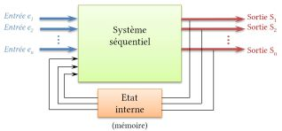
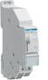

Définition
Définition : Système séquentiel
Un système séquentiel est un système à évènements discrets dans lequel l'état des sorties (variables logiques) dépend à la fois de la combinaison des variables d'entrées (variables logiques) mais aussi de ses évolutions passées.

A chaque occurrence d’évènement, le système évolue et mémorise l'état des variables de sortie afin de pouvoir en tenir compte dans ses évolutions futures. L'ensemble des variables mémorisées est appelé état interne du système.
Exemple : Système {bouton poussoir, télérupteur}
Un télérupteur permet l'alimentation d'un circuit, par exemple un circuit d'éclairage par un ou plusieurs boutons poussoirs. L'état de la sortie (allumé ou éteint) évolue à chaque appui sur le bouton poussoir et dépend de l'état dans lequel elle se trouvait juste avant le dernier appui.
Ce système ne peut pas être considéré comme combinatoire car une même entrée (appui sur le bouton poussoir) peut provoquer deux états différents en sortie. Il garde en mémoire l'état de la sortie afin de le changer à la demande suivante.

Les variables d'entrée peuvent être des interrupteurs, des détecteurs de présence, etc. Elles sont généralement notées en minuscules : e1,e2,...,en
Les variables de sortie peuvent être des moteurs, vérins, résistances chauffantes, pompes, fonctionnant en mode TOR, c'est-à-dire "allumé" ou "éteint". On les note en majuscules : S1,S2,...Sn